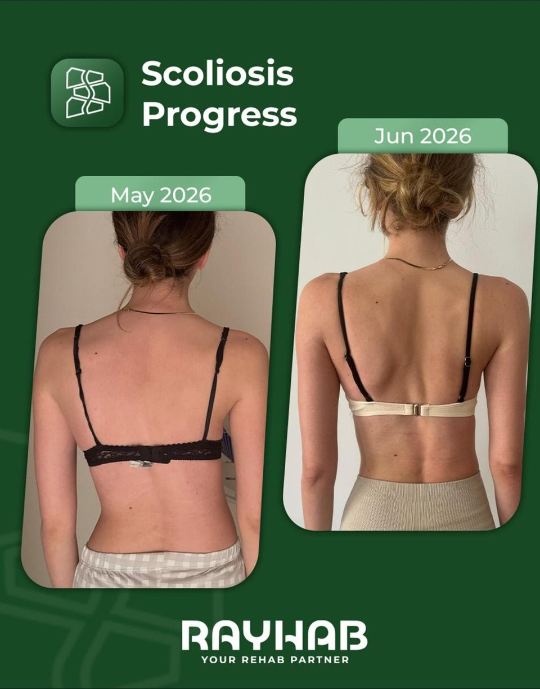
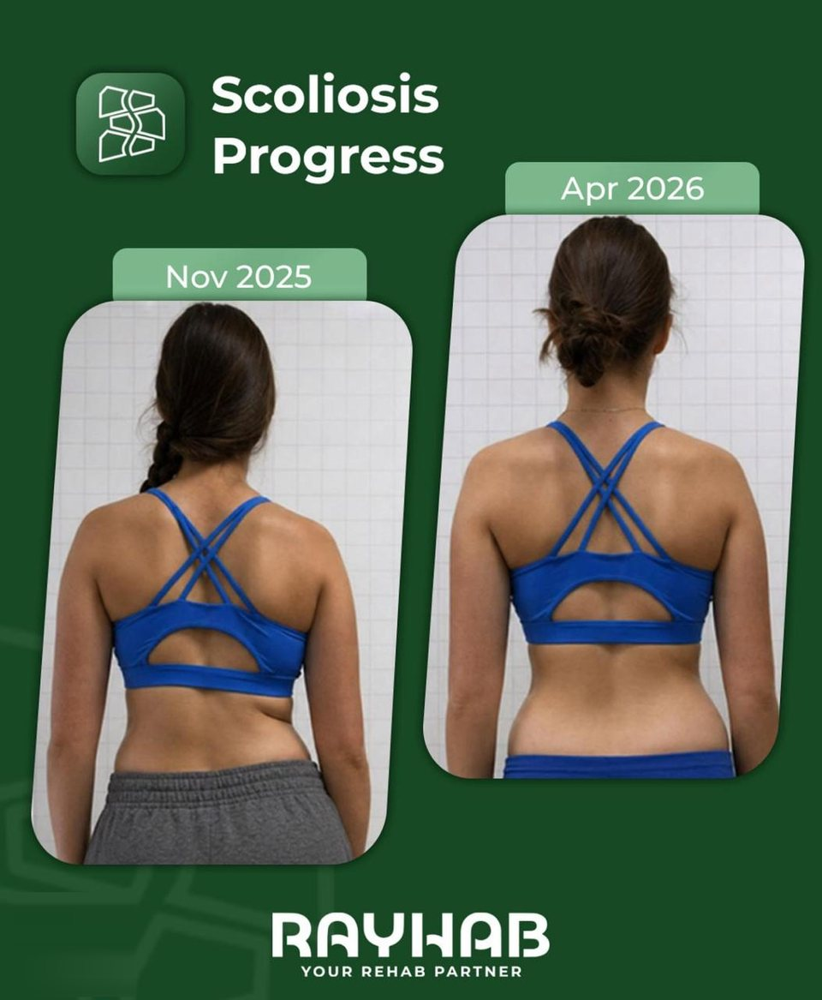

Parents of adolescents
Growth, progression risk, what school screening does and doesn't catch, and how to support a teenager doing daily exercises.
Growth, progression risk, and supporting daily exercises.
Home Scoliosis
Plain explanations of what a curve is, what the numbers mean, what treatment actually involves, and which of the things you've been told are not true. Written by a Schroth Level 2 practitioner, for patients and parents.
Plain explanations of what a curve is, what the numbers mean, and which of the things you've been told are not true.
If you just got a diagnosis
Start with these three, in order. Fifteen minutes total, and you will understand your report.
Start where you are
The same condition raises completely different questions at 13, at 35, and in a training block. Each route is a curated path, not a tag filter.
Growth, progression risk, what school screening does and doesn't catch, and how to support a teenager doing daily exercises.
Growth, progression risk, and supporting daily exercises.
Pain that comes and goes, stiffness, what changes after skeletal maturity, and how to train for decades rather than weeks.
Pain, stiffness, and training for decades.
Loading a curved spine, asymmetric sports, what to modify, and why “stop training” is rarely the right advice.
Loading a curved spine, and what to modify.
The five pillars
Each pillar is a cluster page with its own articles beneath it. This is the structure search engines index and patients navigate.
9 articles
A three-dimensional condition, not a bent line. Curve types, rotation, Cobb angles, how it is measured, what progression risk means, and how to read the report you were given.
6 articles
Where it came from, what elongation, de-rotation and stabilisation mean, what rotational breathing is, and what a session looks like.
5 articles
How assessment, individualisation, active exercise and measurement fit together here, and what we deliberately do not do.
4 articles
What happens in the first sixty minutes, what to bring, what gets measured, and what you leave with. Written so nobody arrives unprepared.
5 journeys
Five consented case studies with real timelines and honest outcomes, including the ones only a few weeks old. Published only with permission.
Misconceptions
Correcting these is the fastest way to earn trust, and it is what people actually search for. Each one links to the full explanation.
“Nothing can be done until it gets bad enough for surgery.”
Specific corrective exercise, postural training and monitoring are active options long before that point. Waiting is a choice, not the only path.
“Exercise is dangerous with a curve.”
Unstructured exercise may not help, but strength, mobility and loading are usually part of good management, chosen for your pattern.
“Bad posture and heavy schoolbags caused it.”
Most adolescent scoliosis is idiopathic. Blaming posture or bags shifts guilt onto families and changes nothing clinically.
“Once you stop growing, it's too late.”
Adult rehabilitation goals differ from adolescent ones, but strength, function, breathing mechanics and pain are all still addressable.
Every claim on these pages stays inside what the evidence supports. Where the research is genuinely uncertain, the article says so rather than filling the gap with confidence.
From the clinic

“Didn’t expect results this fast… Imagine the results in a few more months!”

“I’ve learned so much about my body and how to work with my curve instead of just living with it.”
Both changes here are photographic, not measured. A photograph records standing posture on the day it was taken. Individual results vary.
Two people with the same 28° curve can need different plans. Here is what the measurement captures, and what it leaves out.
The part of Schroth that sounds strangest and matters most: directing breath into the collapsed side of the curve.
Adherence is the whole game in adolescent scoliosis. What works, what backfires, and how to stop it becoming a daily argument.
An assessment turns general information into your specific plan. Sixty minutes, in Beirut or online.